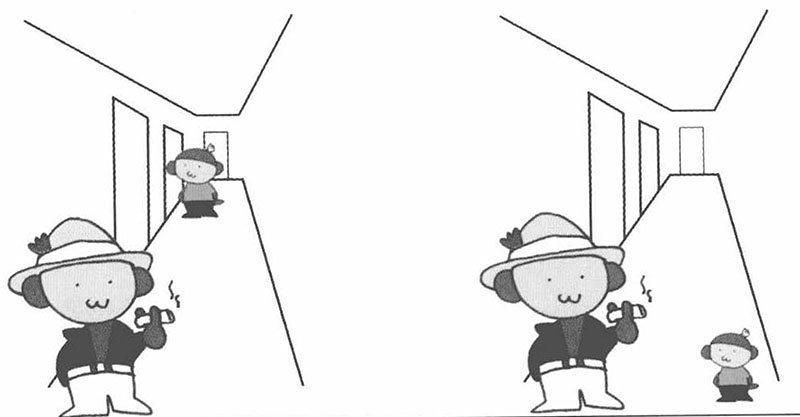
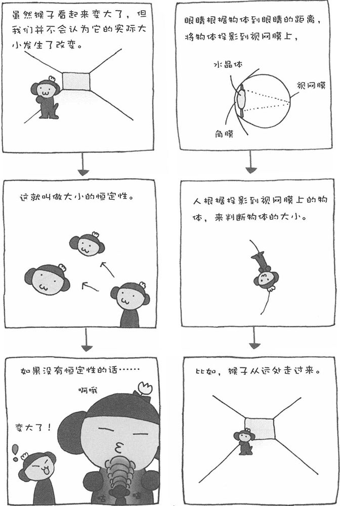

请先看一下下面的图画。图中画的是两只样本猴站在走廊里。左侧的图，我们看不出有什么不对的地方，而右侧的图就让人感觉有点别扭了。

就像右侧图显示的那样，两只样本猴的大小是不同的。可是，只要将这两只大小不同的猴子放在具有纵深感的图中适当的位置，就不会感觉别扭了。
这就是所谓的"大小的恒定性"。当对象事物的距离发生变化时，我们所看到的大小自然也会发生变化。不过，我们人类的视觉有自动修正的功能，可以推测对象事物的实际大小。特别是人的身高、汽车的大小、矿泉水瓶的大小等，我们可以凭经验判断它们的实际大小。因此，我们会优先判断这类事物的实际大小。
大小恒定性的效应非常强。当我们把看到的风景画到纸上时，有时就无法画出正确的比例。因此，学习美术时，首先要学习距离与物体大小的关系。
